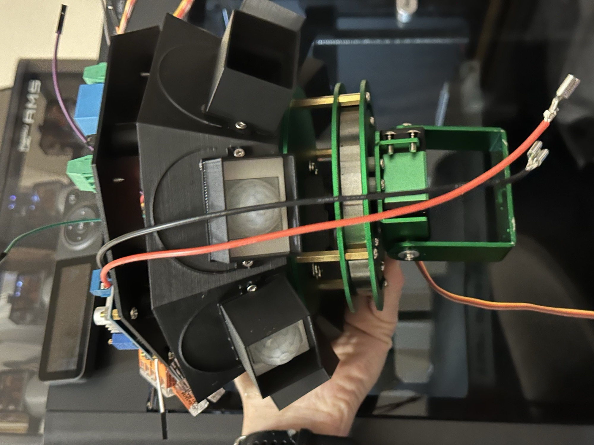

Motion Tracking Spotlight

A ring of HC-SR501 PIR sensors covers nearly every direction. When one trips, a Raspberry Pi Zero 2 WH works out which way it faces and sends I2C commands to a 16-channel PWM driver, which swings a 2-axis servo gimbal toward it.
The PWM driver handles servo timing, so the Pi's GPIO stays free and the OS scheduler doesn't add jitter. The lamp switches through an optocoupler-isolated relay to keep inductive kickback away from the Pi. 12V in, stepped down to 5V by an XL4015 buck converter for the Pi and servos.
Enclosure, sensor mounts and gimbal brackets are modeled in Fusion 360 and printed. It's a ceiling mount for now. The original plan was a tree, covering an outdoor perimeter.
Still open: the PIRs drift with outdoor temperature swings and false-trigger, and there's no weatherproof way to power it without running a wire.